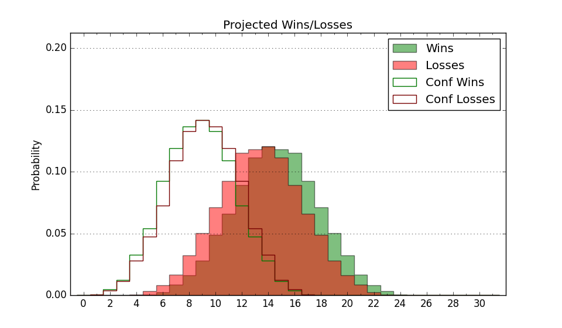

| Home | Game Probabilities | Conferences | Preseason Predictions | Odds Charts | NCAA Tournament |
| City: | Mobile, Alabama | |
| Conference: | Sun Belt (5th)
| |
| Record: | 9-7 (Conf) 15-10 (Overall) | |
| Ratings: | Comp.: 3.5 (131st) Net: 3.5 (129th) Off: 103.1 (169th) Def: 99.5 (120th) SoR: 0.0 (144th) |
| Remaining | ||||||
|---|---|---|---|---|---|---|
| Date | Opponent | Win Prob | Pred. | |||
| 3/3 | (N) Little Rock (323) | 87.9% | W 76-62 | |||
| Previous | Game Score | |||||
| Date | Opponent | Win Prob | Result | Off | Def | Net |
| 11/13 | @Wichita St. (79) | 20.0% | L 58-64 | -5.8 | 9.3 | 3.5 |
| 11/16 | @Alabama (20) | 9.1% | L 68-73 | -9.8 | 27.2 | 17.4 |
| 11/25 | (N) San Diego (222) | 68.8% | W 68-67 | -7.5 | -4.9 | -12.4 |
| 11/26 | (N) Hawaii (175) | 60.3% | W 72-69 | 2.5 | -2.9 | -0.4 |
| 12/1 | Southern Miss (343) | 95.1% | W 85-55 | 5.0 | 6.4 | 11.4 |
| 12/4 | @Jacksonville St. (137) | 36.5% | W 74-64 | 8.5 | 10.8 | 19.3 |
| 12/14 | Tarleton St. (203) | 77.8% | W 69-62 | -8.8 | 5.4 | -3.4 |
| 12/17 | @Tarleton St. (203) | 50.8% | L 52-65 | -16.0 | -4.2 | -20.3 |
| 12/21 | SIU Edwardsville (278) | 87.6% | W 84-69 | 4.8 | -4.7 | 0.1 |
| 12/30 | @UT Arlington (230) | 56.3% | L 87-89 | 15.7 | -23.4 | -7.7 |
| 1/6 | Appalachian St. (161) | 71.3% | L 64-72 | -8.9 | -13.0 | -21.8 |
| 1/13 | Georgia St. (169) | 72.8% | W 74-65 | -0.7 | 3.8 | 3.1 |
| 1/15 | Georgia Southern (248) | 84.6% | W 73-67 | 1.3 | -10.2 | -8.8 |
| 1/20 | @Louisiana Lafayette (190) | 47.0% | W 77-70 | 16.1 | -4.3 | 11.8 |
| 1/22 | @Louisiana Monroe (287) | 68.8% | W 68-56 | 9.7 | 2.3 | 12.0 |
| 1/27 | Troy (185) | 74.7% | W 82-63 | 10.5 | 2.7 | 13.2 |
| 1/29 | @Troy (185) | 46.5% | L 68-77 | 2.0 | -16.7 | -14.7 |
| 2/3 | @Georgia Southern (248) | 61.8% | L 57-58 | -10.3 | 1.9 | -8.4 |
| 2/5 | @Georgia St. (169) | 44.0% | L 62-69 | -6.5 | 1.7 | -4.8 |
| 2/10 | Little Rock (323) | 93.0% | W 77-46 | 10.2 | 12.8 | 23.0 |
| 2/12 | Arkansas St. (178) | 74.0% | W 70-51 | 1.7 | 15.2 | 16.8 |
| 2/17 | @Coastal Carolina (140) | 38.7% | W 71-68 | 15.4 | -9.4 | 6.0 |
| 2/19 | @Appalachian St. (161) | 42.2% | L 51-69 | -13.4 | -12.3 | -25.7 |
| 2/23 | Texas St. (128) | 64.3% | L 52-55 | -16.6 | 0.6 | -15.9 |
| 2/25 | UT Arlington (230) | 81.4% | W 62-52 | 1.5 | 5.3 | 6.8 |
| Stats & Trends | |||||
|---|---|---|---|---|---|
| Current | Day | Week | Month | Season | |
| Composite | 3.5 | -0.0 | -0.3 | -0.8 | +8.3 |
| Comp Rank | 131 | +1 | -- | -6 | +118 |
| Net Efficiency | 3.5 | -0.0 | -0.4 | -1.8 | -- |
| Net Rank | 129 | +1 | +1 | -12 | -- |
| Off Efficiency | 103.1 | -0.0 | -0.6 | -1.2 | -- |
| Off Rank | 169 | -- | -16 | -25 | -- |
| Def Efficiency | 99.5 | -0.0 | +0.2 | -0.7 | -- |
| Def Rank | 120 | -- | +2 | +3 | -- |
| SoS Rank | 216 | -- | -13 | +18 | -- |
| Exp. Wins | 15.0 | -- | -0.5 | -1.6 | +3.6 |
| Exp. Conf Wins | 9.0 | -- | -0.5 | -1.6 | +0.7 |
| Conf Champ Prob | 0.0 | -- | -- | -34.8 | -4.9 |

| Advanced Stats | ||
|---|---|---|
| Stat | Value | Rank |
| Off Eff FG % | 0.516 | 125 |
| Off Ast Ratio | 0.123 | 298 |
| Off ORB% | 0.257 | 249 |
| Off TO Rate | 0.167 | 205 |
| Off FT Ratio | 0.294 | 207 |
| Def Eff FG % | 0.486 | 123 |
| Def Ast Ratio | 0.147 | 224 |
| Def ORB% | 0.305 | 265 |
| Def TO Rate | 0.177 | 92 |
| Def FT Ratio | 0.305 | 190 |